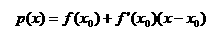
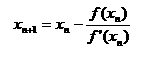
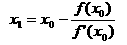
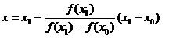
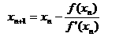

迭代法是用于求方程或方程组近似根的一种常用的算法设计方法。设方程为f(x)=0，用某种数学方法导出等价的形式x=g(x)，然后按以下步骤执行：
（1）选一个方程的近似根，赋给变量x0。
（2）将x0的值保存于变量x1，然后计算g(x1)，并将结果存于变量x0。
（3）当x0与x1的差的绝对值还小于指定的精度要求时，重复步骤（2）的计算。
若方程有根，并且用上述方法计算出来的近似根序列收敛，则按上述方法求得的x0就认为是方程的根。上述算法用C++程序的形式表示为：
x0=初始近似根；
do {
x1=x0；
x0=g(x1)； // 按特定的方程计算新的近似根
} while ( fabs(x0-x1)>Epsilon)；
cout<<“方程的近似根是”<<x0；
例如，采用迭代法求方程x=cos(x)一个根的源程序为：
#include <iostream>
#include <cmath>
using namespace std;
int main() {
float x0,x1=0.0;
while(1)
{
x0=x1;
x1=cos(x0);
if (fabs(x0-x1)<1e-6)
break;
}
cout<<"The real root is "<<x1<<endl;
return 0;
}
【例3】编写一个程序，用迭代法求方程x3－x－1＝0在区间[0，2]中的根。
（1）编程思路1。
用二分迭代法求解。
二分迭代法的原理：先取方程f(x)=0的两个粗略解 x1和x2，若f(x1)与f(x2)的正负符号相反，则表明区间（x1，x2）中至少有方程的一个解。如果f(x)在区间（x1，x2）内单调递增或单调递减，则（x1，x2）内只有方程的一个解。具体做法：取x1，x2的中点x3，计算f(x3）的值。在x1，x2中去掉函数值与f(x3）同号者（假设f(x2）和f(x3）同号），得到一个由x1和x3构成的区间，这个区间是原来的一半，并且包含精确解。不断重复（不是无穷多次）上述步骤，可以得到一个序列：x1，x2，x3，…，xn+1，xn，…这个序列的极限便是方程的精确值。
（2）源程序1。
#include <iostream>
#include <cmath>
using namespace std;
int main()
{
double x1,x2,x3 ;
x1 = 0; x2 = 2 ; // 初始区间
do
{
x3 = (x1 + x2) / 2;
if ((x1 * x1 * x1 - x1 - 1) * (x3 * x3*x3 - x3 - 1) > 0 )
x1 = x3 ; // 改变区间
else
x2 = x3 ; // 改变区间
} while (fabs(x2-x1)>0.000001); // 判断是否满足精度要求
cout<<x1<<endl; // 输出结果
return 0 ;
}
（3）编程思路2。
用牛顿迭代法求解。
牛顿迭代法的基本原理是：设已知方程的近似根x0，则在x0附近f(x)可用一阶泰勒多项式
近似代替。因此，方程f(x)=0可近似地表示为p(x)=0，用x1表示p(x)=0的根，它与f(x)=0的根差异不大。
设f'(x0)!=0，由于x1满足，解得
重复这一过程，得到迭代公式：

牛顿迭代法的几何解析是：在x0处作曲线的切线，切线方程为
。
令y=0，可得切线与x轴的交点坐标

这就是牛顿法的迭代公式。因此，牛顿法又称“切线法”。
（4）源程序2。
#include <iostream>
#include <cmath>
using namespace std;
int main()
{
double x1,x2 ;
x1 = x2 = 2 ; // 初始点 x0=2
do
{
x1 = x2;
x2= x1- (x1 * x1 * x1 - x1 - 1)/ (3* x1 * x1 - 1) ;
} while (fabs(x2-x1)>0.000001); // 判断是否满足精度要求
cout<<"方程的一个根为 "<<x2<<endl;
return 0 ;
}
（5）编程思路3。
用弦截法求解。
弦截法是在牛顿法的基础上得出的求解非线性方程的一种十分重要的插值方法。用牛顿法求解非线性方程f(x)=0的根时，每一步都要计算导数值，如果函数f(x)比较复杂时，计算导数f'(x)往往比较困难。而弦截法使用差商来代替牛顿法中的导数值进行迭代，避免了计算函数的导数值，并且收敛速度很快。
弦截法的算法步骤如下：
1）确定初始值x0，x1；
2）计算函数值f(x0)，f(x1)；
3）利用迭代公式 计算方程新的近似根值x；
4）若满足时便可停止迭代，x作为方程f(x)=0的近似根，算法结束；否则取x0=x1，x1=x，转第（2）步，重复迭代计算x，直到满足要求。
（6） 源程序3。
#include <iostream>
#include <cmath>
using namespace std;
int main()
{
double x0,x1,x,f0,f1 ;
x1 =0; x = 2 ; // 初始区间
do
{
x0=x1; x1=x;
f0= x0 * x0 * x0 - x0 - 1 ;
f1= x1 * x1 * x1 - x1 - 1 ;
x=x1-f1/(f1-f0)*(x1-x0);
} while (fabs(x-x1)>0.000001); // 判断是否满足精度要求
cout<<"方程的一个根为 "<<x<<endl;
return 0 ;
}
比较牛顿迭代法和弦截法可知：
牛顿法是用切线与x轴的交点，逼近曲线f(x)与x轴的交点。迭代公式为
。
弦截法是用两点之间的连线与x轴的交点，逼近曲线f(x)与x轴的交点。迭代公式为
。